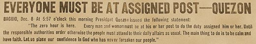
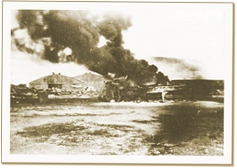

|
j
a v a s c r i p t |

December 8, 1941 — Early Morning
Herald
Iwas still in the shower when fellow stockbroker, Joe Naftaly, phoned at 0530, screaming that Japan had just bombed Hawaii. I woke my eldest brother, Joe, and we listened to the astonishing news in the radio. An hour later we were on our way downtown. Everything seemed strangely normal — hardly a soldier in sight. Spent a busy morning at the office1 scouring for news and reviewing accounts. Got an okay by the censor to send a plain English cable off to Pierce2 to adjust our clients’ portfolios. Manila Stock Exchange Directors suspended trading till Thursday. I cashed-up at the bank then bought an American-made bicycle at Marsman’s in Escolta. Dad wouldn’t go on a food-buying spree, but my youngest brother, Maurice, added some chickens and turkeys to his flock.

Clark Field Devastation
Then another disaster: KGEI announced that 60 Japanese planes bombed and strafed Clark Airfield to great destruction. Rumors flew fast and thick as local stations went off the air. One said the Japanese caught the Americans refueling their planes while the pilots were at lunch. Throughout the day, soldiers herded Japanese civilians into borrowed Meralco [Manila Electric] buses for internment. Italians and Germans would be next. A number of Manilans started evacuating to safer areas. The populace wholeheartedly complied with a partial blackout order, though a bright moon and clear skies betrayed the city. Naftaly called again. A naval officer told him the Japanese attack on Clark destroyed the barracks, hangars and runways, knocking out 17 out of 20 Flying Fortresses. He expected more raids tonight. At midnight Nichols Field was lightly bombed though one or two explosions shook us plenty. An air-raid signal at 0100 was followed by the all-clear an hour later without incident. The Japanese returned at 0310 to finish off Nichols. 1 7th Fl., Wilson Bldg., Binondo |
|
|
|
|